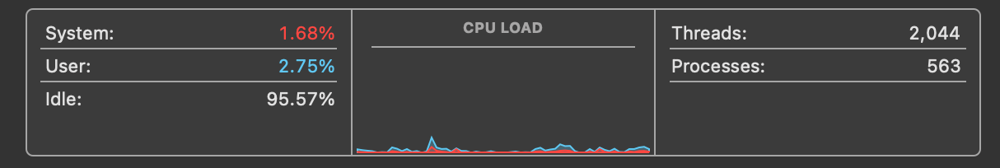
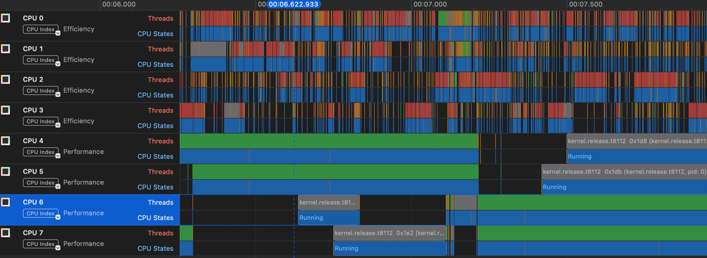

Episode 8: Schedulers
When i stop every program that i started, including the things run at startup, Activity Monitor says that i still have over 500 processes and around 2000 threads. Almost 500 of those threads are part of the kernel_task process. They’re not doing much, but there’s a lot of stuff that could potentially run, way more than will fit on 8 CPUs.

What is all this stuff? It seems like too much, right? Most of it is services that get started when you turn on your computer that perform various system functions, of which there are many because computers are complicated. Some day maybe i’ll go through some of these services but for now let’s just accept that it’s a lot of threads. Making sure all of those threads get a shot at running on the CPU is the job of the scheduler. You’d think schedulers would be fairly simple. You’ve got a list of things that need to run, and you’ve got a set of CPUs on which they can run. You just share, right? I mean, most of us learned this in kindergarten. Everybody takes a turn on the swingset, and you keep doing that until everybody’s had enough swinging or somebody breaks an arm. Simple.
This is actually an approach that some schedulers take, called round-robin scheduling. Every thread in a queue that indicates it’s runnable will get a fixed time slice, say 100ms, and then it sleeps and the next thread gets a time slice. That’s repeated until the thread has completed its computation or somebody breaks an arm.
There are issues with the simple approach, chiefly that threads aren’t all the same. Some just want lots of time on the CPU. Others need short bursts of time and then wait for input (eg, editors). Some programs run as long as your computer is on, while others are stopped and started at random intervals. Some threads must run (operating system stuff for instance) while others are designed to run for hours and so won’t be bothered by the occasional 100ms interruption. When the system is under load, you want to make sure that all of the interactive applications still run smoothly, but you also want to make sure that the CPUs aren’t sitting idle when there’s work to do.
To get a feel for what happens, let’s go back to our threads program from the last episode, the one that just copies 1s and 2s, and again we’ll make the array 1,000,000 elements large. The picture below from the Instruments “System Trace” view shows two things for each CPU. The top bar, labeled “Threads” shows which thread is on the particular CPU and the bar below it is “CPU States”. In most cases, the CPU state will be “Running” (shown in blue)– the only other state that shows up is “Handling Interrupt”.

You can see that our thread (in green) is in the “Running” state on the performance cores, and that about half way through this range it switches from CPUs 4 and 5 to CPUs 6 and 7. The only other threads that show up on these CPUs are kernel threads. You can also see that a lot of stuff is getting run on the efficiency cores, mostly system functions and a few programs like Activity Monitor and Google Chrome.
In another window below this view, Instruments displays a “narrative” of the scheduling, which looks like this:
Timestamp Narrative
00:08.722.152 Ran _pthread_start 0x9e0edb (a.out, pid: 10456) at priority 31 for 996.17 µs.
00:08.723.148 Servicing an interrupt handler, and preempting _pthread_start 0x9e0edb (a.out, pid: 10456) for 416 ns.
00:08.723.149 Ran _pthread_start 0x9e0edb (a.out, pid: 10456) at priority 31 for 459.42 µs.
00:08.723.608 Servicing an interrupt handler, and preempting _pthread_start 0x9e0edb (a.out, pid: 10456) for 5.21 µs. This tells us a few things. One is that our thread seems to be getting slices of 1/2 to 1 ms of CPU time. Also, note that the the scheduler says it’s preempting our thread. You’ll maybe hear the term preemptive scheduling, which means that the scheduler is taking some action to stop the running thread and switch to running something else. In this case it’s servicing an interrupt, which as i mentioned some time ago is a bit of code that has to run to, say, update a timer or read something from a device. Finally, notice that the narrative says that our thread is running at priority 31. This is a CPU priority value used by MacOS to determine how to prioritize our thread with respect to other threads.
Scheduling in general is one of the most complicated parts of the operating system. I’ve read through the Linux scheduler many times trying to get a feel for it, and there have been many articles written about how it works and its limitations. Not so much with the Mac OS scheduler. Fortunately, the XNU source is available, but it’s hard to follow and what i can follow is complicated.
It looks like in Mac OS (as opposed to, say, Ios) the key scheduler is something called the clutch scheduler. I think they’re using the word clutch in the sense of a clutch of eggs (“a group of eggs that is laid by a bird at one time”), but i confess that’s a guess. Here’s what they say about it in the XNU repo:
In order to reason about higher level user workloads, the clutch scheduler schedules groups of threads instead of individual threads. Breaking away from the traditional single-tier scheduling model, it implements a hierarchical scheduler which makes optimal decisions at various thread grouping levels. The hierarchical scheduler, as its implemented today, has 3 levels:
- Scheduling Bucket Level
- Thread Group Level
- Thread Level
Ultimately, the scheduler has to pick a thread to run on a CPU but the clutch scheduler gives more control over priority. There seems to be a separate root bucket for each quality of service level (QoS). The QoS is similar to the priority value i mentioned above, but has to do with the degree of interactivity. For example, if you’re running an interactive application, you want to make sure that once a thread becomes runnable it gets on the CPU quickly, but also it might not need to run for as long as, say, a background job. The slice if time that a thread gets, what Apple calls a quantum is also dependent on the clutch/QoS.
It looks like the scheduler starts with what’s called a worst case execution latency (WCEL) for each root bucket, which is based on the QoS type. For example, the interactive bucket has a worst-case latency of 37.5 ms while the background bucket has a worst-case of 200 ms. The bucket from which to get the next thread is determined by the “earliest deadline first”, so as the nanoseconds pass the interactive bucket will be near it’s deadline more often, but eventually the background bucket deadline will be earliest.
The document linked above describes the thread group like this:
Thread groups represent a collection of threads working on behalf of a specific workload.
I think this means all of the threads launched from a particular process. This level is said to use a variant of the BSD ULE scheduler1, though i don’t know why. There’s apparently an “interactivity score” that’s part of this scheduler that will again try to achieve low latency for interactive applications.
When the scheduler has chosen a clutch root bucket and a thread group, then it chooses an actual thread based on the specific priority of that thread and how much CPU it has already used.
On top of all this is something called the Edge Scheduler. The Clutch scheduler seems to be work per cluster, that is either focused on efficiency cores or performance cores. Sometimes a thread will need to be moved from one cluster to another, which it seems is the job of the Edge scheduler. To make things even more complex, the Edge scheduler can apparently use information from what Apple calls the Closed Loop Performance Controller (CLPC) 2.
One other unique aspect of the Apple world is a software library called libdispatch or, more fancily, “Grand Central Dispatch”. This is a piece of software that sort of bridges user-space programs and the XNU kernel, so that as a programmer you can get the benefits of a system with a bunch of cores (of different types) but you don’t have to manage threads directly.